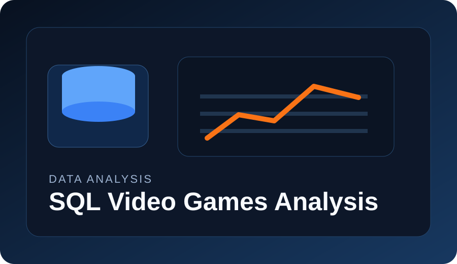
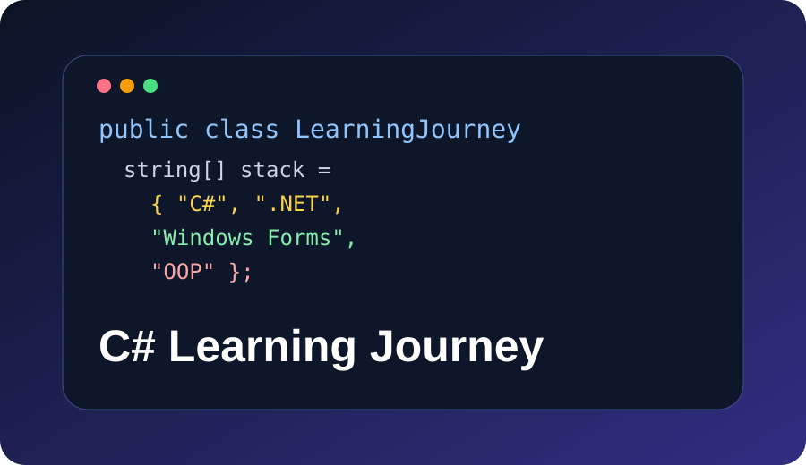
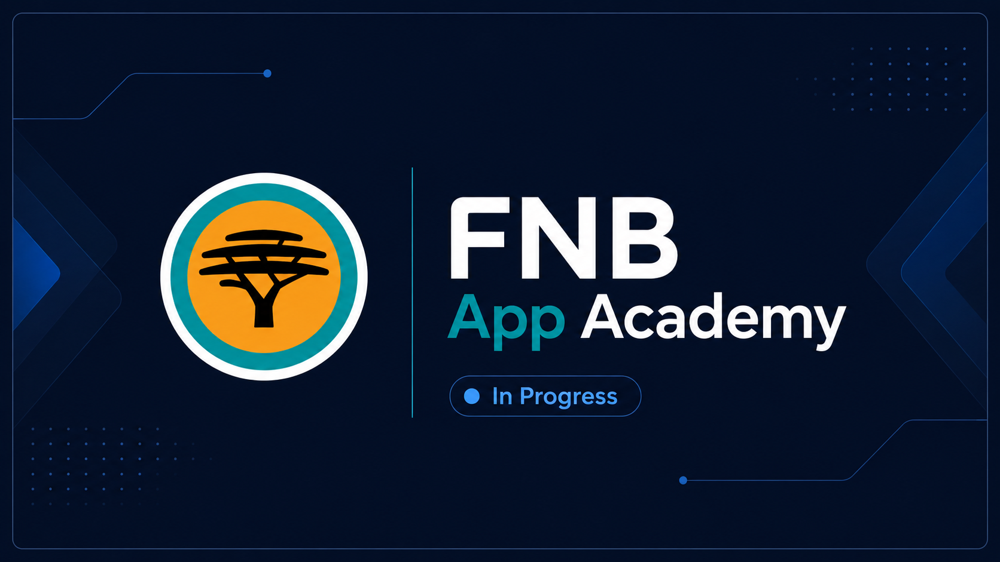
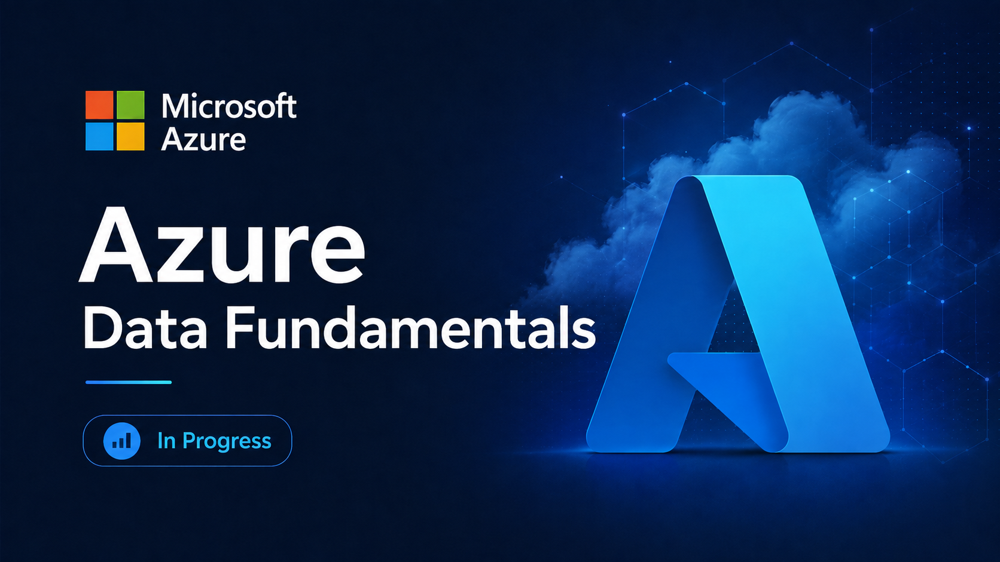

Software development
C#, .NET Framework and Windows Forms, with basic HTML, CSS and JavaScript used in practical projects.
Portfolio · 2026
Information Systems Student | Software, Data & Digital Solutions
I build practical digital solutions while working towards a long-term career in Data Science. I am open to internships, graduate programmes and entry-level opportunities across software, data and information systems.
Information Systems at the intersection of business, technology and data.
I am an Information Systems student at the University of Johannesburg with interests in software development, databases, SQL, data analysis and cloud technologies.
I enjoy learning by building practical projects, solving real problems and strengthening my technical skills through coursework, hackathons and development programmes. My long-term goal is to grow into Data Science, while staying open to opportunities that help me learn, contribute and build useful solutions.
C#, .NET Framework and Windows Forms, with basic HTML, CSS and JavaScript used in practical projects.
Working with relational data, Microsoft SQL Server, SSMS and SQL queries to answer practical questions.
Exploring data, identifying patterns and turning raw information into findings that people can use.
Approaching projects with curiosity, structure and a focus on solutions that are actually usable.
Technical foundations, tools and the areas I am actively growing.
Selected work that shows how I learn, build and solve practical problems.

UJ Compass is a student-support prototype created to help students find the right support channel quickly, join digital queues, and access services like transport and accessibility support through a cleaner, easier experience.

Data analysis
A SQL exploration of a video games dataset using joins, grouping, aggregates and sorting to identify release, sales and score patterns.

Software development
A growing set of C# exercises and small applications focused on programming fundamentals, OOP concepts, file handling and Windows Forms.
Formal study, professional development and certifications in progress or completed.
University of Johannesburg · 2025 — Expected 2027

CAPACITI · 2026

Practical software development learning programme.

Harvard University / edX

Microsoft Azure / YES Programme
Major career interest: Data Science.
I am currently interested in opportunities across different areas of technology because growth can come from many directions. I believe in taking opportunities, learning continuously and building towards a strong long-term path in data.
Open to professional opportunities, collaboration and conversation.

Open to internship, graduate and entry-level opportunities in software development, data and digital solutions.
gomomoazile68@gmail.com